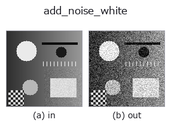

noise op• Data kinds: image → image
• Call: fullseye.apply(img, "add_noise_white", a=0.5, b=0.5) (2-D model = एक image + दो scalar knobs a,b∈[0,1])
• HALCON समकक्ष: add_noise_white (अर्थ और parameters समझने के लिए HALCON reference उपयोगी है)

*Figure synthetic 128×128 input पर सच में चलाकर मिला output है। बाईं ओर input, दाईं ओर output। Point clouds ऊपर से देखे गए scatter के रूप में (brightness = z), 1-D series line के रूप में, volumes z दिशा में maximum-intensity projection के रूप में, videos बीच के frame के रूप में, complex images amplitude के रूप में, और जो return values चित्र नहीं बन सकते वे स्वयं values के रूप में दिखाए जाते हैं।*
Knob a को बदलकर (0.1 / 0.5 / 0.9, दूसरा knob default पर):
▸ add_noise_white: knob a को बदलने का figure (docs site)
Knob b को बदलकर (0.1 / 0.5 / 0.9, दूसरा knob default पर):
▸ add_noise_white: knob b को बदलने का figure (docs site)
दूसरी images पर भी (synthetic scene / photo / coins। ऊपर की row में inputs, नीचे की row में उनके outputs। Knobs default पर):
▸ add_noise_white: दूसरी images पर output (docs site)
*चौथा column colour (H,W,3) input है। यह op channels को पार किए बिना colour संभालता है (colour channel को तीसरे spatial axis की तरह convolve नहीं करता)।*
Gaussian white noise जोड़ता है (np.random.default_rng से बना, standard deviation 0.02+0.2*b)। Random seed int(a*997)+7 से a से deterministic रूप से निकाला जाता है, इसलिए वही a हो तो हमेशा वही noise pattern दोहराया जाता है (ध्यान दें कि यह सचमुच random नहीं है, a को "noise कैसा दिखे उसका प्रकार" चुनने वाले नकली knob की तरह इस्तेमाल किया गया है)। HALCON के add_noise_white (Add noise to an image.) के समकक्ष है।
> नीचे का विस्तृत विवरण मूल text में है — सारांश और headings का अनुवाद हो चुका है।
a は乱数シード(=ノイズパターン)を、b はノイズの強さ(標準偏差) を振る。両方が使われるが、a の意味は「強さ」ではなく「パターン」である点が他の op と異なる。
• gallery2d_smoothing_rank family guide
• mv_image_sensors — Industrial image sensors (मुख्यतः मौजूदा products)
• Sample data catalog (DL URL / license) — 2-D के लिए skimage.data (BSD/public) + synthetic, 3-D के लिए real data sources (Stanford/PDS आदि) के DL URL।
• Operators का स्रोत और संदर्भ — इस op family के मूल research/methods के स्रोत।
• Algorithm का मानक स्रोत (लेखक, वर्ष) और उपयोग ऊपर की family usage guide में दिए गए हैं।
नीचे का program सच में चलता है, यह जाँचा गया है (figure वाला ही input)। Studio की help में यह block buttons बन जाता है, जिनसे इसे वहीं load करके चलाया जा सकता है।
add_noise_white 0.50 0.50
▸ यह pipeline load करें · Load करके चलाएँ
• gallery2d_smoothing_rank — py -3.11 examples/gallery2d_smoothing_rank.py
image को input के रूप में लेते हैं)identity · gaussian · mean_box · bilateral · unsharp · median · min_filter · max_filter
noise)*Provenance: ops.py — 2D operator registry. यह per-op note tools/opdocs.py md से अपने-आप generate होता है (हाथ से edit न करें)।*
© 2026 Kazufumi Furuse — Fullseye operator documentation. Licensed under Apache-2.0.